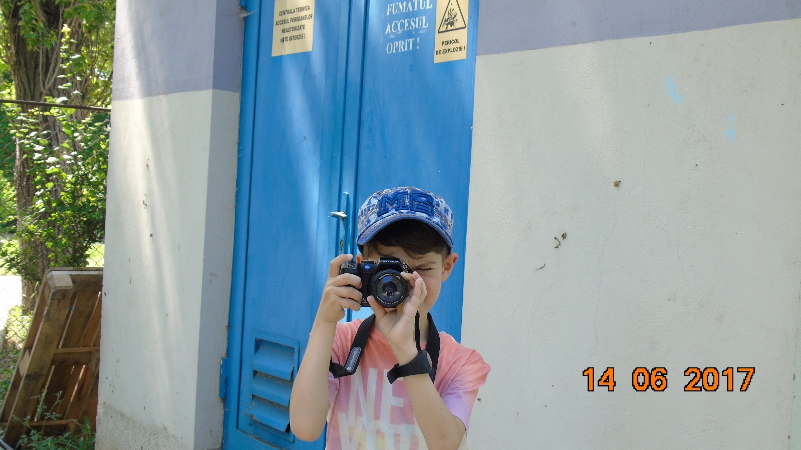

DESPRE MINE
Eu sunt Catalin.
Îmi place foarte mult să fac poze. De când eram mic, am fost atras de aparatul foto, iar cu timpul am realizat că fotografia este mai mult decât un simplu hobby pentru mine. Îmi place să surprind oameni, locuri și momente și să le transform în amintiri care pot rămâne pentru totdeauna.
De atunci și până acum s-au schimbat multe, dar un lucru a rămas același: fotografia mă face fericit.
DE ATUNCI PÂNĂ ACUM


COUNTDOWN
Ne vedem în
--------
ZILEOREMINSEC
DATA
29 August 2026
ORA
18:00
LOCAȚIA
Strada Liliacului nr. 5, Cazasu, Brăila
DESCHIDE ÎN GOOGLE MAPS →RSVP
Vii să sărbătorim?
Confirmă-ți prezența și spune-mi dacă vei veni însoțit(ă).